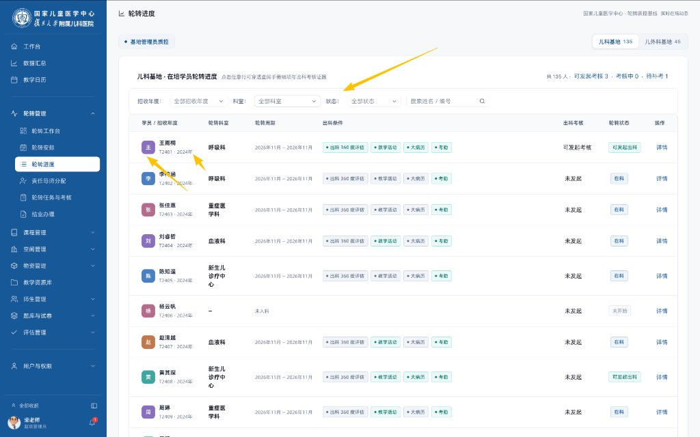

修改记录总清单（索引）
记录总数：5 项
| 序号 | 模块与改动主题（点击跳转） | 端别 | 定位 / 触发路径 | 涉及文件与留痕形式 |
|---|---|---|---|---|
| 01 | 轮转进度 · 筛选栏对齐技能中心课程胶囊样式与 3D 卡通头像升级 | PC端 | 管理端 → 轮转管理 → 轮转进度（pages/轮转进度/index.html） |
pages/轮转进度/page.js + pages/轮转进度/page.css · 图文对比（2 张） |
| 02 | PC 全 11 角色工作台 · 无效卡片隐藏与全量保留卡片分角色截图归档 | PC端 | 全站 11 个角色工作台（常用服务 / 全部服务 → 抽屉与跳转页面） | shared/js/account-hub.js + 隐藏卡片清单.md · 分角色截图（113 张） |
| 03 | 出科考核 · 统一单行胶囊筛选栏、基地标签与 3D 卡通头像 | PC端 | 科室管理员（程主任.html?page=出科考核）与基地管理员（base-manager.html / 郑老师.html → 轮转任务与考核 → 出科考核） |
pages/轮转任务与考核/page.js + pages/轮转任务与考核/page.css · 图文对比（2 张） |
| 04 | 统一账号收件箱 · 名称统一为「通知、提醒和互动」并按三类规则重分 | PC端 | 全站工作台右侧卡片 + 左下角铃铛抽屉弹窗（manager.html 等全角色通用） |
account-hub.js + global-components.js + nav-render.js · 图文对比（5 张） |
| 05 | 专项 · PC 全角色左侧导航与移动端 Icon 语义化与去重改造 | 双端 | PC 端全 19 个角色左侧导航（如「题库与试卷」「评估管理」「空间/物资/师生管理」）及移动端工作台入口 | nav-data.js + tdesign-app.js + 专项方案.md · 文字记录 |
01 · 轮转进度 · 筛选栏对齐技能中心课程胶囊样式与 3D 卡通头像升级
定位：管理端 → 轮转管理 → 轮转进度（pages/轮转进度/index.html）。实现文件：pages/轮转进度/page.js、pages/轮转进度/page.css。
修改前 · 存在问题
- 筛选栏仍采用「招收年度：」「科室：」「状态：」文字前缀 + 小号方角下拉框，搜索框置于最右侧且宽度较窄，与「技能中心课程」的千问胶囊筛选栏样式不统一。
- 学员列表头像仅显示单色圆角方框与姓氏首字，缺少 3D 卡通人物头像视觉质感。

修改后 · 改动说明
- 搜索与筛选项对齐「技能中心课程」胶囊几何：搜索框居左（
300px宽、36px高、999px圆角、0.5px solid #e1e6ef边框），后接无前缀标签的胶囊下拉筛选（全部招收年度、全部科室、全部状态），右侧附带共 X 人统计与激活筛选时的重置按钮。 - 学员头像升级为 3D 卡通头像（按姓名稳定映射
shared/assets/avatars/avatar_01.png~avatar_10.png，34px圆形描边容器），并保留首字母色块作为加载兜底。

02 · PC 全 11 角色工作台 · 无效卡片隐藏与全量保留卡片分角色截图归档
定位：全站 11 个角色工作台（shared/js/account-hub.js roleServiceCatalog）。实现文件：shared/js/account-hub.js、清单文档：docs/PC端工作台隐藏卡片清单-20261128.md。
- 隐藏清理：保留原配置结构，对无角色菜单权限/占位页（A 类 14 项）、路由目标名与左侧菜单名不一致导致回退工作台（B 类 15 项）及第三方应用蓝图（2 项）共 48 处条目标记
hidden: true并在getWorkbenchConfig()中过滤，同时隐藏空分类。 - 全量实测截图：剩余 102 张保留卡片经
isValidPageForRole与无头浏览器逐张点击验证 0 项失效，按 11 个角色分目录截取工作台总览与每张卡片对应的抽屉/跳转页面，共 113 张 1440×900 截图。
01-学员端(student)（工作台总览 + 11 张保留卡片）
02-进修学员(trainee)（工作台总览 + 2 张保留卡片）
03-教师端(teacher)（工作台总览 + 14 张保留卡片）
04-科室管理员(department-manager)（工作台总览 + 11 张保留卡片）
/03-课程审核.png)
/10-科室教学日历.png)
05-技能中心管理员(resource-scheduler)（工作台总览 + 10 张保留卡片）
06-基地管理员(base-manager)（工作台总览 + 9 张保留卡片）
/03-入科名单与安排.png)
07-督导专家(supervisor)（工作台总览 + 3 张保留卡片）
08-教研室管理员(teaching-research-manager)（工作台总览 + 4 张保留卡片）
09-进修管理员(continuing-manager)（工作台总览 + 1 张保留卡片）
10-院级管理员(admin)（工作台总览 + 33 张保留卡片）
11-后台管理员(backend)（工作台总览 + 4 张保留卡片）
03 · 出科考核 · 统一单行胶囊筛选栏、基地标签与 3D 卡通头像
定位：科室管理员（程主任.html?page=出科考核）与基地管理员（base-manager.html / 郑老师.html → 轮转任务与考核 → 出科考核）。实现文件：pages/轮转任务与考核/page.js、pages/轮转任务与考核/page.css。
04 · 统一账号收件箱 · 名称统一为「通知、提醒和互动」并按三类规则重分
定位：工作台右侧收件箱卡片（AppUnifiedInboxPanel）与左侧栏底部铃铛抽屉弹窗（.message-drawer）。实现文件：shared/js/account-hub.js、shared/js/global-components.js、shared/js/nav-render.js、shared/styles/components.css、shared/styles/sidebar.css。
05 · 专项 · PC 全角色左侧导航与移动端 Icon 语义化与去重改造
定位：PC 端全 19 个角色左侧导航（如「题库与试卷」「评估管理」「空间管理」「物资管理」「师生管理」「用户与权限」「AI 配置」）及移动端工作台/支持入口。实现文件：shared/js/nav-data.js、移动端/shared/tdesign-app.js；专项文档：docs/专项-Icon语义化与去重改造方案.md。
修改前 · 存在问题
group(label, iconName, children)辅助函数将父级 Icon 直接透传给所有字符串子项，导致多个角色的一级与二级菜单完全同图标（例如「题库与试卷」及其下 5 个子项全为clipboardList）。evalAdminGroup()、admin、academic-affairs、course-admin、resource-scheduler、backend等显式配置中存在工作台与分组同图标、发证与成果同图标（award）、表单库与学员评估同图标（clipboard）等问题；且「临床思维课程」引用的icons.brain在icons字典中缺失。- 移动端科室管理端「试卷中心」使用
clipboard-list、「课程审核/把关」使用check-check，教师端「表单开发任务」使用file-plus，与管理端口径不一致；学员端「我的报名」与「评价反馈」共用clipboard-list。
修改后 · 改动说明
- 在
shared/js/nav-data.js补齐brain并新增sparkles、layoutDashboard、fileText、fileSpreadsheet、fileCheck、badgeCheck、bookOpenCheck、clipboardPen、shieldCheck、userCog、cpu、calendarPlus、calendarRange、radar、dumbbell、compass、tags等 18 个线性 SVG 图标（全库共 136 个）。 - 建立
pageIcons页面级语义映射并升级group()：仅「父子完全重名」的单子项直达入口（如「教学资源库 › 教学资源库」）沿用同名图标，其余全部按语义匹配独立图标（如「题库与试卷」layers→ 题库工作台barChart/ 题库管理database/ 试卷中心fileSpreadsheet/ 题库设置sliders/ 自适应学习sparkles），经脚本校验 19 个角色零父子/同级重复。 - 移动端（
移动端/shared/tdesign-app.js）同步统一：科室端「试卷中心」改为file-spreadsheet、「课程审核/把关」改为book-check，教师端「表单开发任务」改为file-check-2，学员端「评价反馈」改为message-square-heart。